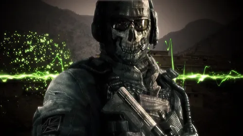
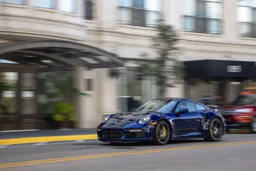

GHOST
Ghosts is a 2013 first-person shooter video game developed by Infinity Ward and published by Activision. series and the sixth developed by Infinity Ward. It was released for PlayStation 3, Wii U, Windows, and Xbox 360, on November 5, 2013. The game was released with the launch of the PlayStation 4 and Xbox One.

Porsche 911
The Porsche 911 is a iconic sports car produced by German manufacturer Porsche. It is available in various trim levels, including Carrera, Carrera S, GTS, and Turbo, each with distinct features and performance characteristics.

Rick Astley
Richard Paul Astley (born 6 February 1966) is an English singer. He gained fame through his association with the production trio Stock Aitken Waterman,"Whenever You Need Somebody", was also a No. 1 hit.